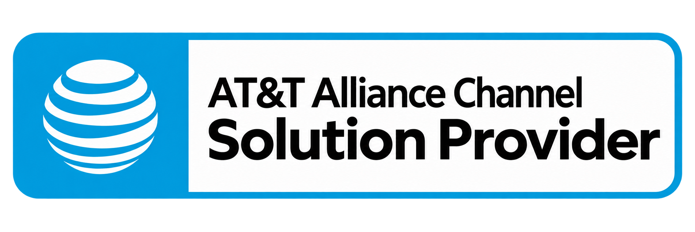

One dedicated point of contact
One dedicated point of contact, proactive order updates, first-bill reviews, and ongoing provisioning support.
Enterprise mobility, networks, cloud and security.
One accountable partner.

Complete business technology solutions.
Experienced people bringing it all together.

Smarter wireless management. Greater control.
Explore solution ↗
Reliable connectivity for every business location.
Explore solution ↗
Greater visibility and control over telecom costs.
Explore solution ↗
Scalable infrastructure. Simplified operations.
Explore solution ↗
Connect every location with greater flexibility and visibility.
Explore solution ↗
Protect your business, users, and network.
Explore solution ↗
A single point of contact for business connectivity, device management, and ongoing account support.
Explore solution ↗
Proactive IT support to keep your business running.
Explore solution ↗Enterprise communications are complex enough. We simplify the way you manage wireless, wireline, and connectivity services through one dedicated partner, proactive support, and personalized account management.
One dedicated point of contact, proactive order updates, first-bill reviews, and ongoing provisioning support.
Stay informed with regular updates on orders, service requests, upgrades, and ongoing projects.
Review service charges, verify new orders, and identify opportunities to improve plan efficiency and control costs.
Benefit from experienced coordination of activations, device deployments, upgrades, and service changes.
Dedicated business account support, at no additional cost to eligible customers.
From initial consultation to ongoing account management, we simplify every step of your business technology journey with one dedicated team and a clear plan of action.
We start by understanding your business, reviewing your existing services, and identifying opportunities to improve costs, connectivity, and account management.
We develop a tailored solution based on your business needs, recommending the right wireless plans, devices, network services, and technology options to support your goals.
We coordinate orders, device deployments, activations, provisioning, and installations, keeping you informed throughout the process and helping minimize disruptions to your business.
Our support continues after deployment. We help manage service changes, upgrades, billing reviews, and ongoing requests while identifying opportunities to optimize your account as your business evolves.
Your business deserves a knowledgeable, dependable partner.